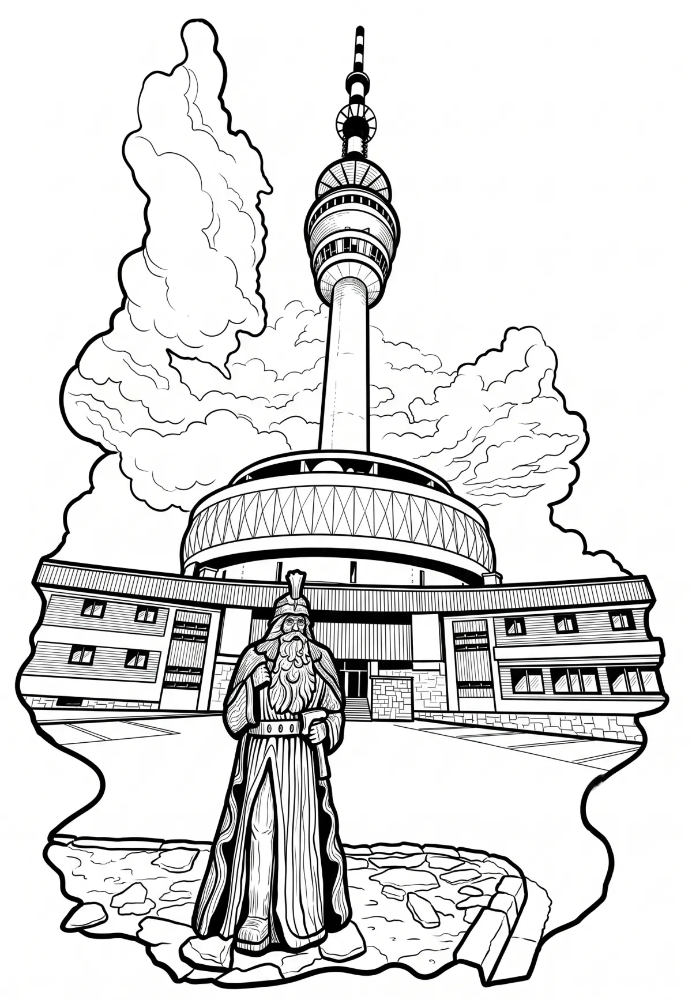

Vysílač Praděd
Moravskoslezský kraj · 1492 m n. m.

technická památka · #093
Rozhledna a televizní vysílač Praděd je stavba na vrcholu Pradědu v Hrubém Jeseníku. Jeho vrchol je nejvyšším pevným umělým bodem Česka, s nadmořskou výškou mezi 1 637 a 1 638 m převyšuje vrchol nejvyšší české hory Sněžky. Vysílač stojí v Moravskoslezském kraji ve slezském katastrálním území Malá Morávka (součást obce Malá Morávka), v těsné blízkosti historické zemské hranice Moravy a Slezska.